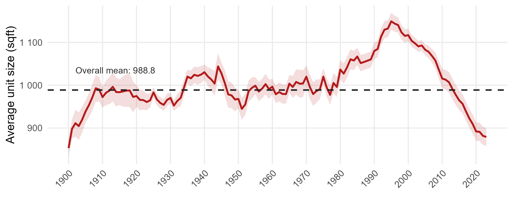
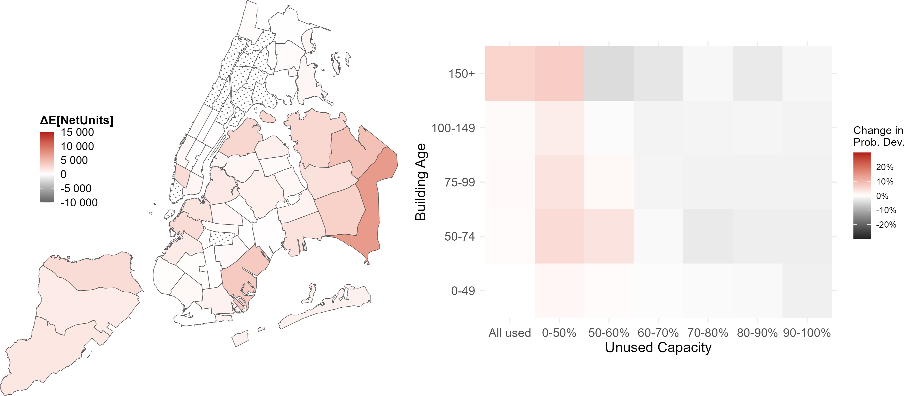
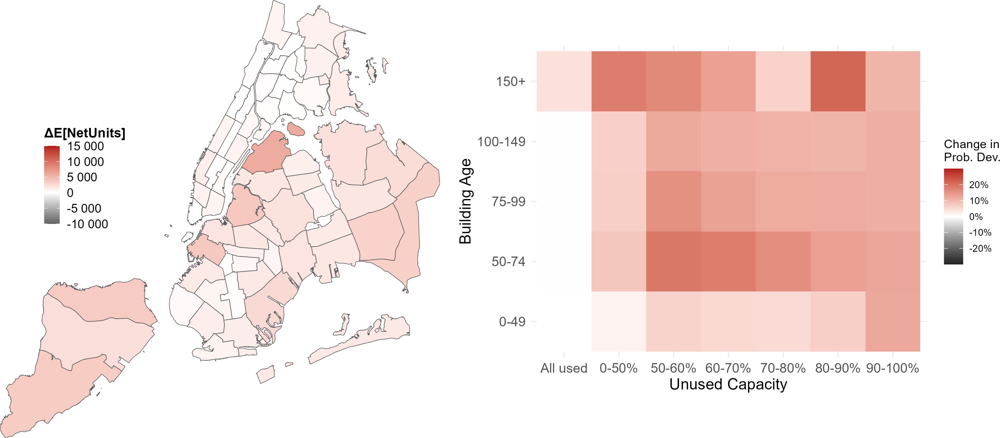
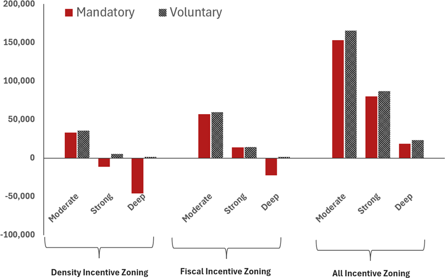
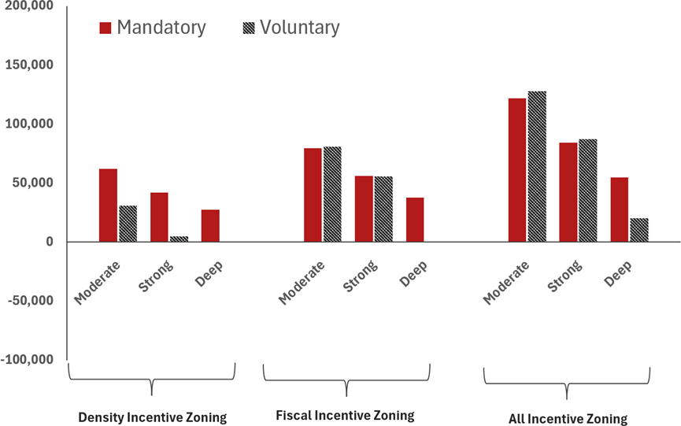
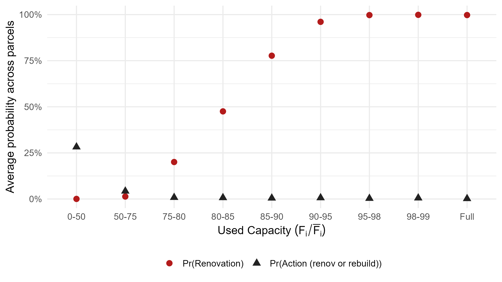
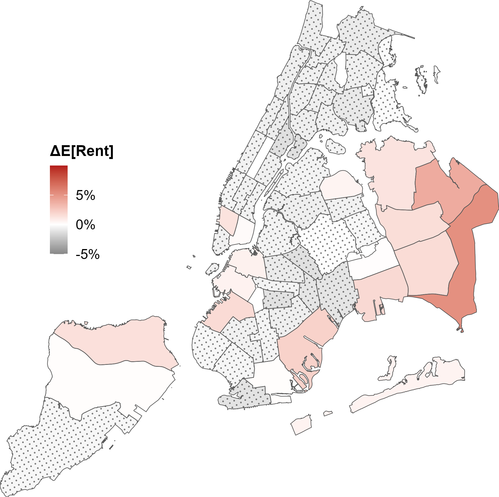
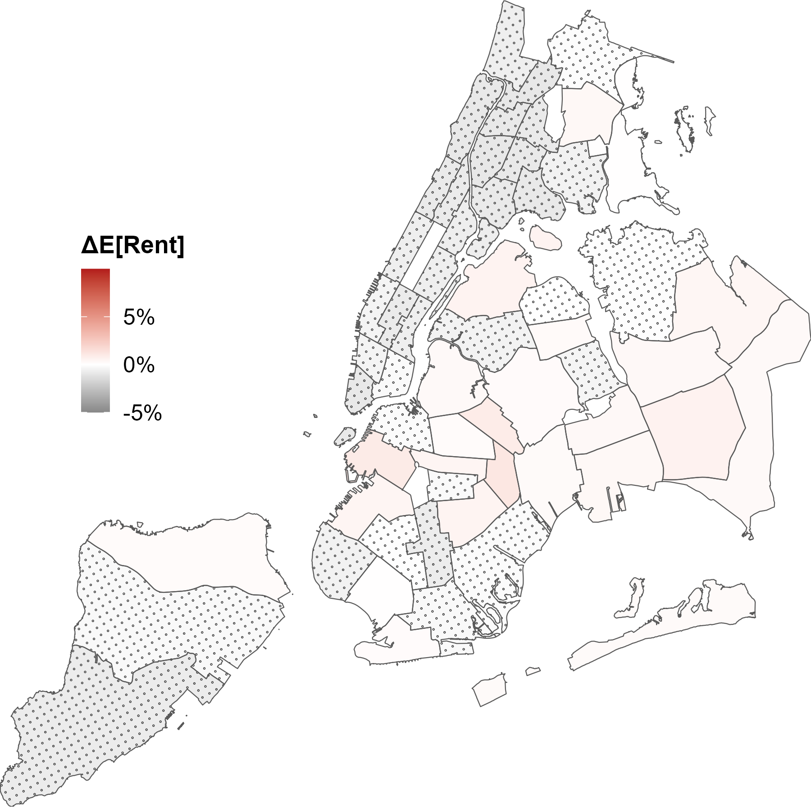
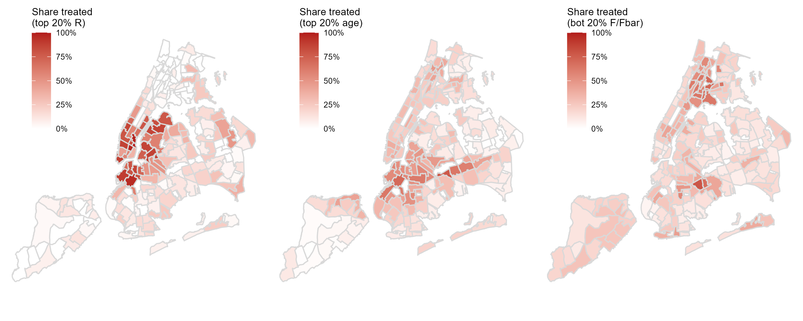

Cornell University & ETH Zurich
When Redevelopment Transforms the Housing Stock: Why Building More Does Not Always Lower Rents in NYC
New research on how housing incentives and affordability mandates work through the redevelopment of existing buildings, what each policy costs, who pays, and how the location of redevelopment shapes who sees rents fall.
01
Housing production is up. So are rents. Why?
New York City has added tens of thousands of units over the past decade, yet rents keep climbing. The standard story, that more supply lowers prices, looks like it is failing. It is not failing. It is incomplete.
In a mature city there is no empty margin to build on. Between 2023 and 2025, roughly two-thirds of private residential permits were filed on parcels that already carried a building. Only on Staten Island, where vacant land remains, does that share fall, to about 34%. New housing in New York is mostly redevelopment: tearing down older, depreciated stock and replacing it with newer, taller, higher-rent construction.
About two-thirds of private residential permits filed citywide between 2023 and 2025 were on parcels that already carried a building, not vacant land.
The parcels that redevelop are predictable. Buildings over 100 years old redevelop at roughly 2.5 times the rate of buildings under 40, and they rent for about 14% less. Parcels with unused zoning capacity redevelop far more often than those built to their limit: about 4.0% of parcels with more than 75% of their allowable density unused filed a permit. Rents pull development too. A 10% higher rent per square foot is associated with 7.1% more permitted units, and a one point higher expected rent growth with 39% more.
Figure 1. Residential permits and built environment.


Redevelopment concentrates on underbuilt, older parcels.
Figure 2. Residential permits and rent dynamics.


Permitted units track rent per square foot and expected rent growth.
02
Replacement, not expansion
When a developer tears down a rent-discounted walk-up and builds a new 12-story building, what looks like a supply increase is also a composition shift. The new units enter without accumulated depreciation, at higher rents than what they replaced. More units, but higher average rents. We call this the replacement effect.
Housing supply here is not a curve that policy slides along. It is the sum of individual parcel decisions about whether, when, and how intensively to redevelop. Because each decision is made parcel by parcel, policy changes not only how much housing exists but what kind.
Within our calibration, policies that raise construction raise average rents, because the replacement effect dominates the downward pull of added supply. Under a representative upzoning counterfactual, average rent rises about 1.31% over the model's 10-year projection horizon, even as supply expands. Per unit, replacement adds about $60 per month while added supply subtracts about $25. The net is positive because the mix of the stock shifts toward newer, higher-rent units.
This is not an argument against building. It sharpens the question from "build more or less" to which parcels redevelop, when, at what density, and under what conditions. Those are exactly the levers housing policy controls.
Figure 9. Expected rent decomposition, by counterfactual policy.

Average expected rent change under each counterfactual policy, decomposed into the affordable-share, citywide-supply, local-supply, and replacement effects.
This effect is not uniform across the city. Districts where redevelopment concentrates feel the composition shift that pushes rents up; districts with little redevelopment feel mainly the citywide relief. Where a city directs redevelopment is therefore itself a policy choice, one that can lower rents broadly in some neighborhoods even as it raises them in others. See Where to Target below.
"This holds even measured per square foot rather than per unit, and even if new construction runs 20% smaller than the existing stock. Newly built units have in fact grown about 7% smaller over the past decade, well within the range we test. The result is about the composition of the housing stock, not the size of individual apartments."
Figure D7. Citywide unit-size trend, new construction.

Citywide trend in new-construction unit size.
03
Tax exemptions and density bonuses are not interchangeable
NYC's incentive toolkit has two main instruments: property tax exemptions (like the former 421-a) and density bonuses (upzoning, higher allowable FAR). Both expand supply. They do not work the same way.
Tax exemptions work on timing. By cutting post-construction tax liability, they make redevelopment profitable sooner and pull forward projects that would otherwise sit on the margin. The response is broad, concentrated in areas with older buildings and unused density. Western Brooklyn and Queens respond most. The tradeoff is fiscal: the city gives up tax revenue during the exemption window.
Density bonuses work on scale. Allowing taller buildings raises the value of redevelopment but also raises the value of waiting. A developer who can build 15 stories instead of 10 may rationally hold off until rents justify the larger project. So density bonuses can delay construction on parcels near the redevelopment threshold even as they raise the size of projects that do get built. High-value locations gain most; some marginal parcels see lower near-term redevelopment.
The two are not substitutes. Tax incentives act on whether and when a parcel redevelops; density bonuses act on how big. A city that uses only one leaves a lever untouched. Stacking both produces the largest supply expansion.
Figure 3. Effects of policy instruments on property value and development probability.


Effects of policy instruments on property value and development probability, by instrument.
Where each instrument concentrates development: tax exemptions produce a broad, diffuse response across older neighborhoods citywide; upzoning concentrates in a narrower set of high-value locations. Choosing between them is a choice about which neighborhoods benefit, not only how much gets built.
Figure 7. Housing production heterogeneity, by instrument.


Where development concentrates under each instrument, map and decile heatmap combined.
04
What affordability mandates actually deliver
Mandates, requirements that a share of new units rent below market, are the most used tool for producing affordable units and the most misunderstood.
What they do: they reallocate access to new construction. Over the model's 10-year projection horizon, a 30% mandate produces roughly 42,000 affordable units that genuinely reach households otherwise priced out of new buildings.
What they do not do: they do not expand the bottom of the rent distribution. Those same 42,000 affordable units come with about 56,000 fewer market-rate units, because a mandate lowers the return to redevelopment and some marginal parcels no longer pencil out. And because redevelopment with a mandate is only profitable where rents are already high, mandated affordable units land in the middle of the distribution, not the bottom. The share of units in the lowest rent quintile barely moves. The cheapest housing in NYC keeps coming from the aging existing stock, not from mandated units in new buildings.
This is why mandates work best paired with incentives: the carrot offsets the supply-dampening effect of the stick.
Figure 6. Housing production counterfactuals: affordable vs. market-rate scatter.

Affordable and market-rate production under each counterfactual policy. Only the combined policy expands both; standalone mandates fall below the 45-degree line.
05
Designing the mandate: three choices that matter
A mandate is not one lever, it is several. How deep the discount runs, whether participation is required or invited, and what else owners can do instead all shape whether a mandate produces the affordable units it is meant to.
5a
How deep, not just whether
The affordability discount itself, how far below market rent a mandated unit must rent, is a separate lever from whether a mandate exists at all, and it matters just as much. We test three depths: a moderate discount, a strong discount, and a deep discount. Under a mandatory regime, deepening the discount lowers the effective rental income developers earn on affordable units, which reduces the value of redevelopment across the board, not just on the affordable share. In several cases, total housing production turns negative relative to no policy at all, even while affordable production stays positive: the mandate still produces affordable units, but it does so by shrinking the market-rate stock more than it grows the affordable one. A shallow requirement can expand total supply; a sufficiently deep one can contract it.
5b
Mandatory or voluntary?
Cities do not have to make participation mandatory to get results. We also test voluntary versions of these policies, where a parcel only opts in if doing so raises its value. At moderate affordability depth, voluntary programs perform about as well as mandatory ones, because most parcels that would redevelop anyway also come out ahead by participating. About 45% of parcels would voluntarily adopt a density incentive program on its own, and about 45% a fiscal incentive program, with roughly 12% of adopters differing between the two. Offer both together, and voluntary adoption rises sharply, to 72.1%, as 27% of parcels that wouldn't adopt either instrument alone opt in once both are on the table.
The tradeoff is exactly the depth lever above: as the affordability requirement deepens, fewer parcels still clear the bar to voluntarily participate, and production drifts back toward the no-policy baseline. The combined incentive is the exception: because it raises redevelopment value on two margins at once, it keeps enough parcels participating to stay effective even at the deepest requirement we test, where single-instrument voluntary programs largely fail.
For a city weighing whether to mandate or invite participation, voluntary gets you close to mandatory outcomes at moderate depth, with less political friction. Push the requirement too far on a voluntary basis, and the friction reappears differently: owners simply decline to participate, unless the incentive on offer is generous enough to keep them at the table.
Figure 8. Affordability levels and voluntary policy interventions.


By policy regime (mandatory, voluntary) and affordability depth (moderate, strong, deep). Supports both 5a and 5b.
5c
An unpaired mandate has an escape hatch
Owners have another option besides redevelopment: renovate the existing building instead of tearing it down. Renovation restores a building's quality without adding density, and, importantly, policies do not apply to it. A renovated building faces no tax incentive and no affordability mandate, because it was never redeveloped in the first place.
On its own, this option barely changes citywide housing production. Owners choose renovation mainly on parcels already near their zoning limit, ones that were unlikely to redevelop anyway, so overall construction is largely unaffected either way.
But it matters for mandate design specifically. Impose an affordability mandate with no paired incentive, and the share of parcels that choose renovation over redevelopment rises by about 8 percentage points. Owners are not avoiding the policy at random, they are avoiding it precisely because renovation offers a legal way around it. Pair the mandate with a tax exemption or density bonus, and this reverses sharply: the incentive makes redevelopment worth choosing again, and reliance on renovation as an escape route falls well below its no-policy baseline.
This is one more reason mandates work best paired with incentives: without one, some of the affordable units a mandate is meant to produce simply never get built, because the owner renovated instead.
Figure E1. Renovation decision and probability of action by used capacity.

Renovation decision and probability of action, by used capacity.
06
See what your policy choice does
Move the sliders to see what a given combination of incentives and mandates would produce citywide: how many units, how many affordable, and how rents respond.
07
Who pays for each mandated affordable unit?
Below-market housing is not privately profitable, so a mandate opens a gap between private return and public objective. Someone absorbs it. Holding total supply fixed, each affordable unit substituted for a market-rate unit costs about $59,900 under density incentive zoning and about $61,200 under fiscal incentive zoning.
Call it about $60,000 per unit. The instrument decides who pays.
Under tax exemptions paired with mandates, about 90% of the cost falls on the public sector through foregone tax revenue. Landowners are largely held harmless.
Under density bonuses paired with mandates, the cost splits closer to evenly: about 46% falls on the public sector, the rest on landowners through lower land value.
Fiscal instruments are easier to pass because landowners support them, but they are expensive for city budgets. Regulatory instruments protect public revenue but draw stronger opposition from property owners.
Figure 12. Cost of mandated affordable housing.


Required incentives, cost per unit, public share, and rent-quintile impact, by paired instrument.
08
Not all neighborhoods respond the same way
Not all neighborhoods respond the same way, and that is not only a fact about where units get built. It is a lever. Because the replacement effect is local, tied to the specific parcels that redevelop, while the citywide supply effect reaches every neighborhood, a district that absorbs little new construction gets mostly the citywide relief without the local rent increase that comes from replacing its own older stock.
These patterns come from modeling the whole city at once, not neighborhood by neighborhood. What happens in any one district depends on how much redevelopment is happening everywhere else in the city at the same time. The numbers below describe one specific, citywide plan, not a menu of neighborhood options to freely mix and match. Redirect redevelopment toward a different or smaller set of districts, and the results shift everywhere, not just in the newly targeted area.
Under the two mandatory incentive bundles, the citywide average hides just how much this varies underneath it. Over the model's 10-year projection horizon, Density Incentive Zoning raises the citywide average rent by about 0.11%; Fiscal Incentive Zoning actually lowers it, by about 0.13% (the same two numbers shown in Figure 9 above). Both modest numbers cover a clear geographic pattern: rents fall across large parts of the city, including most of Manhattan, Brooklyn, and the Bronx under Density Incentive Zoning, and an even broader area under Fiscal Incentive Zoning, while increases concentrate in the specific districts absorbing most of the new construction.
Figure D2. Expected rent change by community district.


Expected rent change by community district under each mandatory incentive bundle.
This is a real tradeoff a city can choose to make, not a free one. Concentrating redevelopment in a defined set of districts means those districts absorb the visible cost, rising average rents as newer, higher-rent buildings enter the mix, in exchange for broader relief elsewhere. The tools examined in this paper do not just add housing; where they are directed shapes which neighborhoods feel the increase and which get the relief.
The model is clear about this forward question: given a policy, where redevelopment happens and how it affects rents there and elsewhere. It does not yet answer the reverse question a policymaker actually faces: given a neighborhood where you want rents to fall, where should new construction happen instead, and how much, to achieve it. That is a harder, genuinely open problem, one this research raises rather than solves.
The same instrument produces very different outcomes depending on where it is applied. We re-run the two unilateral incentives, upzoning and a 20-year tax exemption, on three targeted subsets: the 20% of parcels with the highest rent potential, the 20% most obsolete by age, and the 20% least utilized by FAR. These groups barely overlap spatially: high-value parcels sit in Manhattan, western Brooklyn, and Queens; the most obsolete in Brooklyn; the least utilized in the Bronx.
Two rules come out of it. Density bonuses deliver most where land is already valuable: targeted at the top 20% by value, upzoning captures about 63% of citywide floor-space production. Tax exemptions deliver most on underbuilt parcels: targeted at the least utilized parcels, a tax exemption captures about 79% of citywide production. Match the instrument to the parcel.
Targeting the least-utilized parcels also produces the smallest rent increase of any scenario. That is the cleanest confirmation of the replacement effect: those parcels are closer to vacant, so redevelopment there expands the stock rather than replacing it, and the upward rent pressure that defines dense-city redevelopment is largely absent.
| Target group | Upzoning | Tax exemption | ||
|---|---|---|---|---|
| Net units | Rent | Net units | Rent | |
| All parcels | +55,008 | +1.31% | +77,877 | +1.21% |
| Most valuable (20%) | +38,159 | +1.19% | +40,341 | +1.28% |
| Most obsolete (20%) | +16,918 | +0.59% | +22,501 | +0.66% |
| Least utilized (20%) | +27,490 | +0.23% | +60,827 | +0.28% |
Figure D5. Targeted parcels by criterion: rent potential, age, and unused capacity.

Targeted parcels by criterion: top 20% by rent potential, top 20% by age, bottom 20% by unused capacity.
09
Policy implications
Stack the tools
The largest gains in both market-rate and affordable units come from combining tax exemptions, density bonuses, and mandates. Each acts on a different margin.
Target deliberately, for both production and rents
Parcels near their threshold respond to tax incentives but weakly to density bonuses; high-value parcels respond to density bonuses. And because the rent effect is local, not just the production effect, where redevelopment happens shapes which neighborhoods feel the increase and which mainly get the citywide relief. That is a real pattern worth factoring into siting decisions, not yet a formula for hitting a specific rent target in a specific neighborhood, see Where to Target above.
Do not expect mandates to reach the lowest-rent households
Mandated units cluster in new buildings on higher-value sites, above the bottom quintile (see the rent-quintile breakdown in Figure 12d, The Cost). Reaching the lowest incomes means preserving and improving the aging stock, not only mandating affordability in new construction.